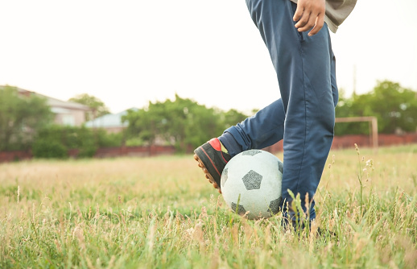
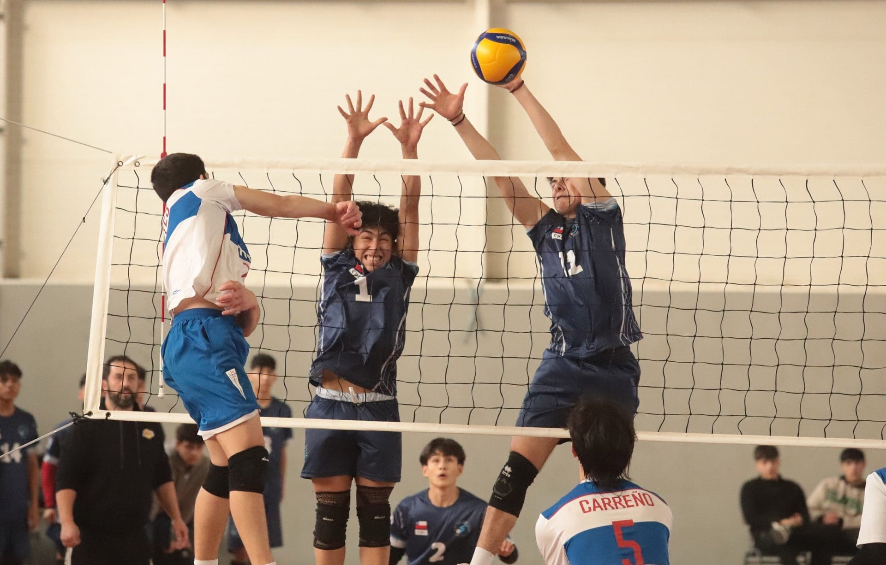
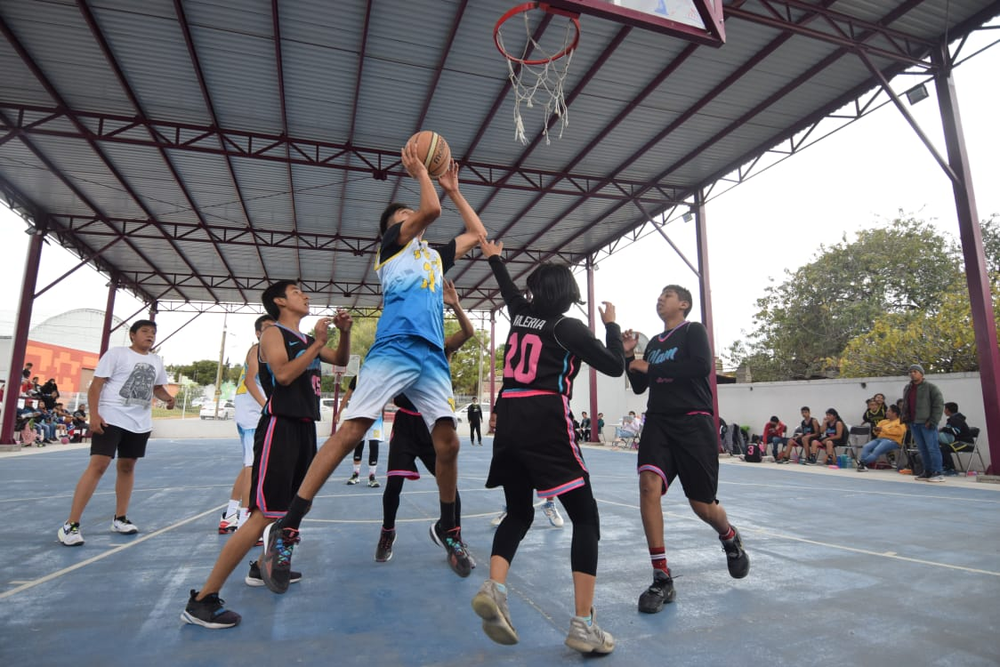

Para los deportes no fui muy bueno la verdad pero a lo largo de mi vida practique algunos deportes
Tanto como en el colegio como afuera de el jugaba futbol no era muy bueno no tenia mucha cordinacion pero me gusta ser portero y defensa, eso fue en mi niñez y adolescencia ya en mi vida adulta ya no jugue por temas de tiempo.

En el colegio era bueno jugando voleibol ese deporte si me gustaba en mi carrera tambien practique en el primer año de diversificado ya despues por el mismo tema de estudios y tiempo ya no lo practique.

El basquetbol ha sido tambien uno de los deportes que me ha llamado mucho la atencion lo jugaba en el colegio y afura de el con mis amigos que tambien les gustaba y eran muy buenos ibamos a unas canchas cerca de mi casa yo era el que prestaba el balon
